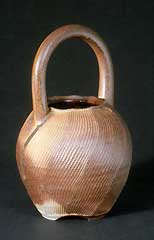
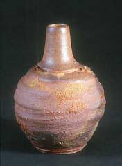
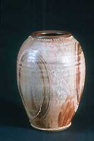
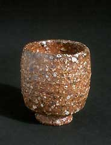
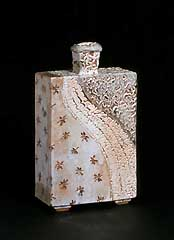
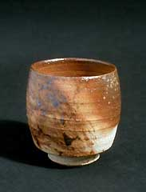
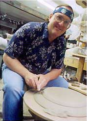

| John
Baymore
American studio potter

American studio potter John
Baymore studied under Lyle N. Perkins at the University
of Massachusetts, Amherst from 1967–72. He turned his attention
to wood-firing in 1969 and established his first studio ‘Otis
Earthworks’ in Massachusetts in the early 1970s, and River
Bend Pottery in New Hampshire in 1977. He worked as the ceramics
technician at Massachusetts College of Art from 1974–78 and
taught part-time there from 1978–85. Baymore is currently
adjunct Professor of Ceramics at the New Hampshire Institute of
Art.

Baymore is considered a specialist in the design and construction
of fuel-fired kilns, including noborigama kilns. He received a Judge’s
Special Prize at the 1st Ceramics Competition in *Mashiko, Japan
in 1996 and was artist-in-residence at the Kanayama World Woodfire
program in Japan in 2004. He makes wheel-thrown and wood-fired pottery
influenced by the Oriental aesthetic.

In
his own words:
"Handcrafted claywork satisfies our human senses, offering
aesthetic balance in an increasingly high-tech world. My work is
meant to be explored with the eye and the hand, lived with, and
reflected upon, providing an element of high touch in an increasingly
impersonal world."
"Woodfiring is a seductive, magical procedure that allows
the potter to directly influence the surface of the pieces during
the time the ware is subject to the immense heat of the firing.
Woodfiring is about constant involvement and decisions; choice of
wood species, age since cutting, rhythm and timing of stokes, amount
of air, size of pieces, and the location they are tossed within
the chamber. These all directly influence the final outcome. No
other heat source keeps the potter so intimately involved in this
final, crucial phase of the production of ceramic pieces."
Baymore is a member of the National Council on Education in the
Ceramics Arts (NCECA), the American Craft Council and the American
Ceramics Society's Potters Council. He lives and works in Wilton,
New Hampshire. Website: http://www.johnbaymore.com.
More Featured Artists
More Articles |
{kind=link}
{kind=link}
{kind=link}
{kind=link}
{kind=link}
{kind=link}